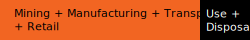

An efficient LED lightbulb consumes 10 watt hours of energy when it is kept on for 1 hour.
One of these light bulbs on for 4 days (100 hours), or 100 lightbulbs on for 1 hour, consumes 1 kilowatt hour of energy.
1,000 watt hours = 1 kilowatt hour

Producing one smartphone consumes about 100 kilowatt hours of energy. That would be 10,000 lightbulb hours: a light bulb turned on for 416 days.
Through a combination of energy-intensive production methods, planned obsolescence, and a 2-5 year use window, many modern electronic devices have an embodied energy of 70-80%. That is, 70-80% of the energy consumed by the entire lifecycle of these products is associated with their production phase.
This means we consume the most energy when we buy or replace our laptops, tablets, e-readers, smartphones, Internet of Things devices, and really anything that includes an integrated circuit.
As an individual, it's difficult to change the infrastructure and supply chains on which an entire industry relies. One way to address the problem is to extend the life of your devices through repair.
Network connectivity also adds to energy consumption. The information communication technology (ICT) sector represents 3-5% of global energy consumption, and this percentage is expected to grow. This estimate does not take into account the production of internet infrastructure, like servers and data centers.
Data centers are a huge proportion of internet energy use, and blockchain technologies are exacerbating this.
It is important to examine the risks associated with global communications networks that depend on a supply of cheap energy, and our role in the life cycle of electronics.